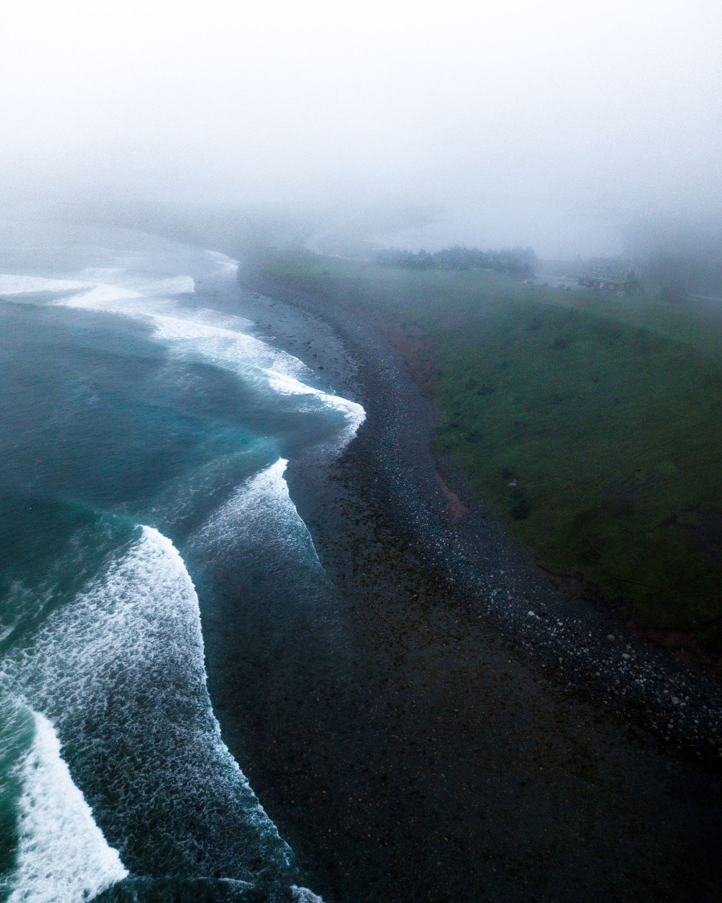
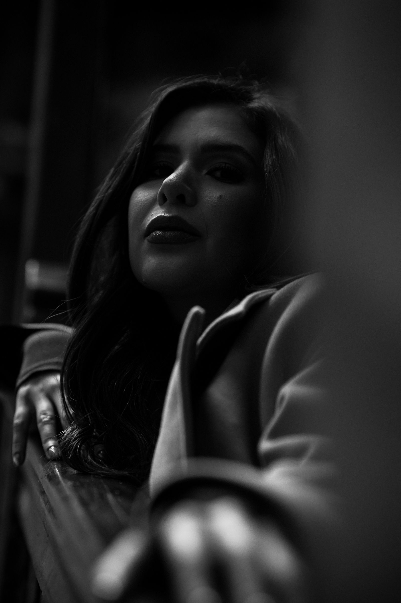
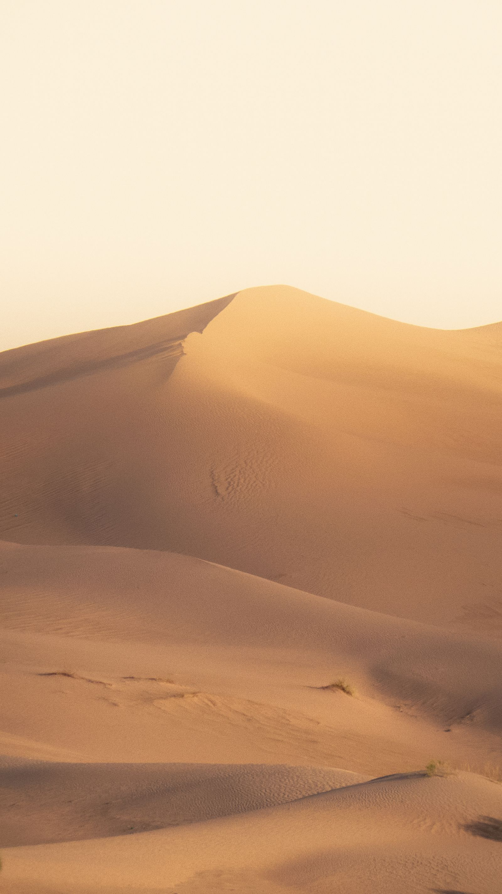

Portrait stories
An unhurried portrait session, in a place that feels like you.
From $450



Selected observations / 2024—2026
I’m Elliot, a photographer drawn to the spaces between things. The pause before a smile. The last light on an unfamiliar street. The way a place feels when no one is trying to describe it.
My work spans portraits, editorial stories and personal observations. What connects it is a wish to make something honest — a photograph that gives you a little room to feel.
London, and wherever the story takes us.A little time. Something lasting.
Thoughtful sessions, shaped around the story you want to tell.
An unhurried portrait session, in a place that feels like you.
Visual storytelling for independent brands, publications and people.
Small weddings, meaningful gatherings and the moments in between.
A personal series
“These don’t just look like us. Somehow, they feel like us.”
A new conversation
A person, a place, an idea.
I’d love to hear what’s on your mind.